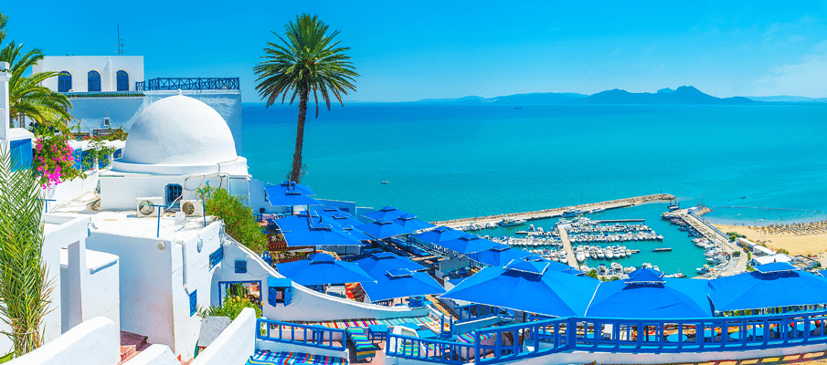

<!-- 
  @Author: Hannah Shader
  @Date:   2024-01-25 12:52:14
  @Last Modified by:   Hannah Shader
  @Last Modified time: 2024-01-27 00:02:10
-->
<!DOCTYPE html>
<html lang="en">
    <head>
        <meta charset="utf-8">
    </head>
    <body>
    </body>
</html>
<!doctype html>
<html>
<head>
<title>Homework 1</title>
</head>

<body>
    <h1>Hannah S.</h1>
	<h2>Computer Science</h2>
    <h3>127.0.0.1</h3>
    <h3>Northern California</h3>
	
    <p>My favorite place is Sidi Bou Said, which is a city in Tunisia. I have family who live nearby. The architecture, food, and weather are all amazing. </p>
    <br style="clear: both;">
    <br>
    <a href="https://parisbaguette.com/" target="_blank">Favorite Restaurant</a>
    <br>
    <a>Something no one would expect about me: My favorite colors are light yellow and light pink. </a>
	</div>
</body>
</html>